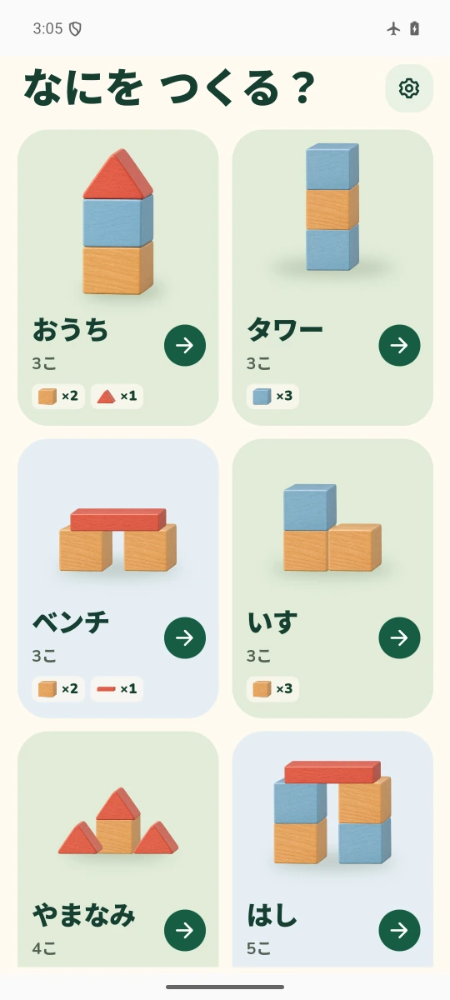
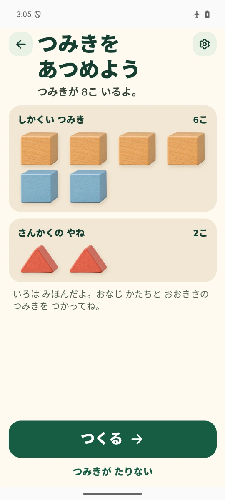
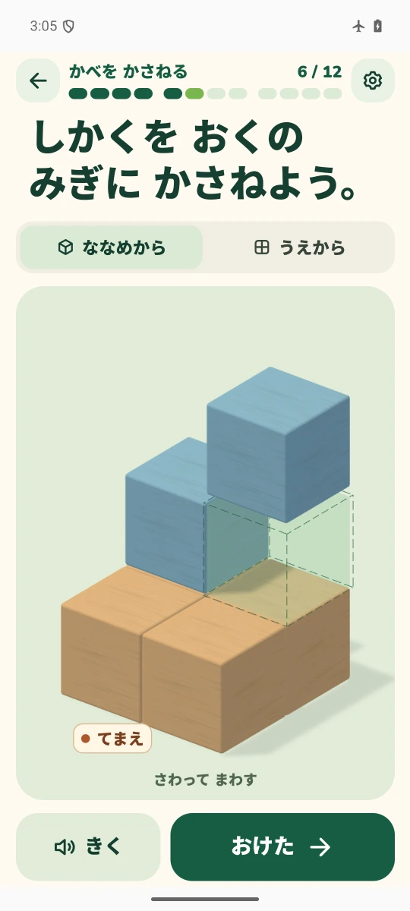

おうちの積み木で、 今日は何をつくろう？
つみキューは、手元の積み木で家や電車、お城などを作るための3Dガイドです。次に使う積み木と置く場所が、ひと目でわかります。

選んで、そろえて、組み立てる。


画面を拡大つくりたい形を選ぶ
家や電車など、気になる作例から始められます。


画面を拡大使う積み木をそろえる
必要な積み木の形と数が、作る前にわかります。


画面を拡大置く場所を3Dで見る
モデルを回して奥側も確認。「きく」で手順を聞き直せます。
よくある質問
- 専用の積み木は必要ですか？
- 作例に合う形・大きさなら、おうちの積み木で遊べます。色は見本と違っていても大丈夫です。足りないときは、アプリの「つみきが たりない」から別の作例を選べます。
- インターネット接続なしで使えますか？
- インストール後は、作例・3Dの組み立て手順・音声案内をオフラインで使えます。
- 案内音声はオフにできますか？
- アプリの設定から、案内音声のオン・オフを切り替えられます。